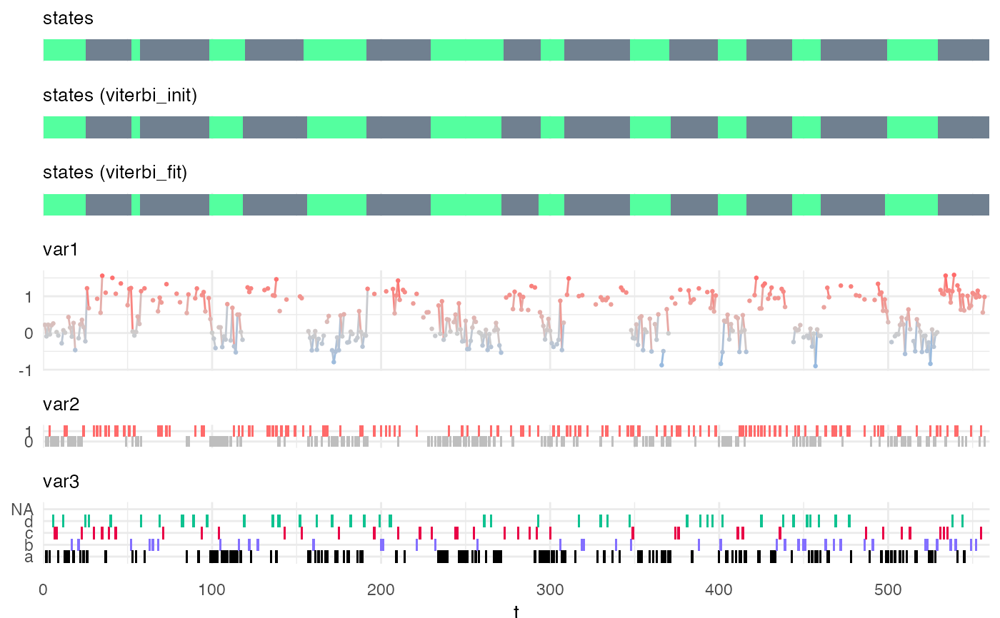

fit_hsmm.RdThis function relies on a EM procedure to fit the model parameters to maximize the likelihood of the decoded hidden state sequence.
It returns a list whose first element is the fitted model (an object of class hsmm) and whose second elements provides information about the EM procedure (convergence, number of iteration, likelihood).
fit_hsmm( model, X, n_iter = 10, rel_tol = 1/20, lock_emission = FALSE, lock_transition = FALSE, lock_sojourn = FALSE, N0 = 0, use_sojourn_prior = FALSE, ground_truth = data.frame(), trust_in_ground_truth = 0.75, verbose = FALSE, graphical = FALSE )
| model | a |
|---|---|
| X | a |
| n_iter | (optional) an integer specifying the maximal number of iterations for the EM-procedure. Default value is 10. |
| rel_tol | (optional) a positive double specifying the tolerance at which to stop the EM. If the difference in likelihood (normalized by the total sequences length) between two iterations of the EM is smaller than |
| lock_emission | (optional) a logical. Default is |
| lock_transition | (optional) a logical. Default is |
| lock_sojourn | (optional) a logical. Default is |
| N0 | (optional) a positive number specifying the strength of the prior, i.e. the number of observations (or believed number of observations) which informed the specification of the emission distributions. This number will be used to weight the specified emission distribution against the total lenght of the sequences provided for the fit. |
| use_sojourn_prior | (optional) a logical. Default is |
| ground_truth | (optional) a |
| trust_in_ground_truth | (optional) a double between 0 and 1 specifying the trust in the ground truth. A value of 0 indicates no trust and is equivalent to not providing ground-truth. A value of 1 indicates full trust and the ground truth will not be modulated by the probability of the values of the observations. |
| verbose | a logical (default = |
| graphical | a logical (default = |
A list. First element of the list ($model) is a hsmm object (the fitted model) and the second element ($fit_param) provides information about the EM-procedure. The second element can be visualized by calling the function plot_hsmm_fit_param().
Y. Guédon, Estimating Hidden Semi-Markov Chains from Discrete Sequences. Journal of Computational and Graphical Statistics. 12, 604–639 (2003) https://www.tandfonline.com/doi/abs/10.1198/1061860032030
J. O’Connell, S. Hojsgaard, Hidden semi-Markov models for multiple observation sequences: The mhsmm package for R. Journal of Statistical Software. 39, 1–22 (2011) https://www.jstatsoft.org/article/view/v039i04
my_model = simple_model # simple_model is a model attached to the HiddenSemiMarkov package for demos Xsim = simulate_hsmm(my_model, n_state_transitions = 20) # a short sequence is simulated my_model_fit = fit_hsmm(model = my_model, X = Xsim) # the model is fit to the observations.#> Warning: The `.dots` argument of `group_by()` is deprecated as of dplyr 1.0.0.viterbi_init = predict_states_hsmm(model = my_model, X = Xsim, method = "Viterbi") # predict the states with the initial model viterbi_fit = predict_states_hsmm(model = my_model_fit$model, X = Xsim, method = "Viterbi") # predict the states with the fit model Xsim$state_viterbi_init = viterbi_init$state_seq$state Xsim$state_viterbi_fit = viterbi_fit$state_seq$state plot_hsmm_seq(X = Xsim, model = my_model)